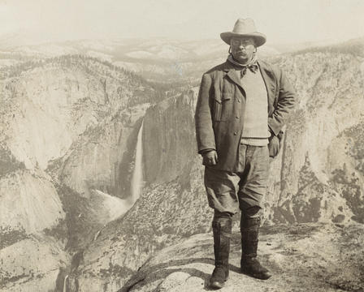
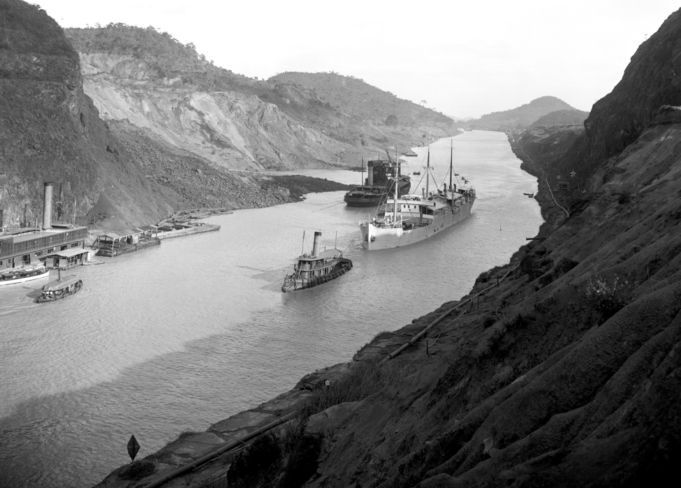

Returning from the war a hero, Roosevelt won the election for Governor of New York. Here he learned much about economic and political issues that he would later address.
When the current Vice-President died before the election year, Roosevelt's friend persuaded him to run for the position. Roosevelt accepted and won the nomination.
In 1901, President McKinley was assassinated by an anarchist, making Roosevelt the youngest president in the U.S at age 42.
During his presidency, Roosevelt worked to break up and regulate monopolies. He passed the Pure Food and Drug Act which banned harmful consumables from being made.
Roosevelt was also a conservationist and created five new national parks, 150 national forests and over 50 wildlife preserves. Overall, Roosevelt created 150 million acres of protected land.
Roosevelt's foreign policy was also successful: he oversaw the construction of the Panama Canal, he won a nobel peace prize for mediating the end of the Russo-Japanese War and he cemented America's position as a world power.
Roosevelt was easily re-elected and even today, he is often ranked one of the top five presidents in U.S history.
 